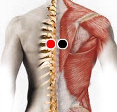

Vibrio Parahemolyticus
Par
dorsal 7 - dorsal 7

Generalidades:
A diferencia del Vibro Colera esta bacteria resiste la sal, Pero no resiste temperaturas por arriba de los 60° C. Al refrigerarse cesa de multiplicarse y al congelarse muerte.
Síntomas:
Trastornos gástricos: gastroenteritis, dolor abdominal, distensión, fiebre, diarrea, entre otros.
Transmisión
Asociado al consumo de mariscos, más común en lugares como Japón.